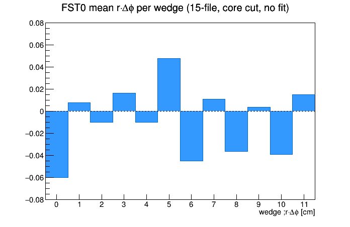

← back to residual index | distributions.html | translation test
StFstHitMaker::Make() not applying a DB/survey alignment correction it computes — see translation test page for that discussion and its open caveats). Not a fix at the source — a downstream correction that absorbs the step pattern regardless of its actual cause.
DataDisk/pico/alignment/*.FwdAlignment_BLCVtx.root (track type: BLCVtx), 150 files, ~117M rows — same dataset as distributions.html.
DataDisk/wedgecorr_condor/*.FwdAlignment_BLCVtx.root (15 files, run 23081015, all reprocessed via condor with the phase-fixed correction, see code below).
FstWedgeAligner in StRoot/StFwdTrackMaker/StFwdHitLoader.h/.cxx, applied in StFwdHitLoader::loadFstHitsFromMuDst(). Opt-in only (setApplyFstWedgeAlignment(true) on StFwdTrackMaker, wired through fwd_afterburner_db.C's applyFstWedgeAlignment argument) — off by default, not yet in routine production.
script/computeWedgeCorrection.C.
StFstConsts.h's kFstphiStart/kFstphiStop (the hardware wedge-to-phi mapping) are single 12-entry arrays with no per-disk variant, so this is true by construction of the detector, not just of our phi-binning choice. See the phi-range column in the table below.
| Disk | W0 | W1 | W2 | W3 | W4 | W5 | W6 | W7 | W8 | W9 | W10 | W11 |
|---|---|---|---|---|---|---|---|---|---|---|---|---|
| FST0 | -7.271 | +1.096 | -1.476 | +2.857 | -1.234 | +6.262 | -5.856 | +1.923 | -4.920 | +0.666 | -4.712 | +2.365 |
| FST1 | +2.934 | -5.147 | +4.865 | -2.575 | +3.776 | -2.012 | +2.006 | -2.858 | +1.207 | -1.799 | +1.198 | -3.505 |
| FST2 | +1.411 | +4.961 | -3.647 | +2.564 | -3.000 | -1.889 | +1.911 | +4.294 | +1.591 | +1.295 | +0.639 | +2.373 |
| φ range [deg] | [-180,-150) | [-150,-120) | [-120,-90) | [-90,-60) | [-60,-30) | [-30,0) | [0,30) | [30,60) | [60,90) | [90,120) | [120,150) | [150,180) |
Same φ range for all 3 disks (per the hardware-mapping argument above). Cross-checked against kFstphiStart/kFstphiStop: wedge boundaries at 0,±30,±60,±90,±120,±150,±180° match exactly.
script/compareCorrection15.C.
| Disk | mean|level| uncorrected | mean|level| corrected | reduction | peak-to-peak uncorrected | peak-to-peak corrected | reduction |
|---|---|---|---|---|---|---|
| FST0 | 0.0251 cm | 0.0103 cm | 59% | 0.1074 cm | 0.0432 cm | 60% |
| FST1 | 0.0246 cm | 0.0092 cm | 63% | 0.0842 cm | 0.0343 cm | 59% |
| FST2 | 0.0214 cm | 0.0090 cm | 58% | 0.0721 cm | 0.0421 cm | 42% |
8.3M corrected rows / 8.7M uncorrected rows (core cut). A solid 42-63% reduction across all 3 disks and both metrics. Not a complete elimination — the steps are visibly still there after correction, see below.

FST0 mean r·Δφ per wedge (15-file, uncorrected, core cut, corrected wedge binning) — no fit of any kind. Compare to a smooth sin(φ-φ0): this is a step pattern, not a sinusoid.
| Before (uncorrected) | After (corrected) | |
|---|---|---|
| Residual vs x, y, r, rφ, φ | ../distributions.html | after/distributions.html |
| More detailed look at r·Δφ vs φ (sine fit) | ../translation/index.html | after/translation/index.html |
FstWedgeAligner class and its use in loadFstHitsFromMuDst()
Survey_st DB entries actually hold validated survey offsets (vs. unpopulated/identity placeholders) before concluding StFstHitMaker::Make()'s discarded correction was meaningful; then decide whether to raise bugreport_StFstHitMaker.txt upstream
{kind=link}